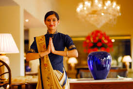
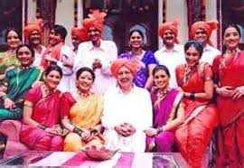
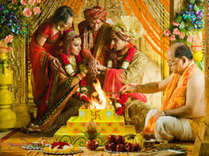
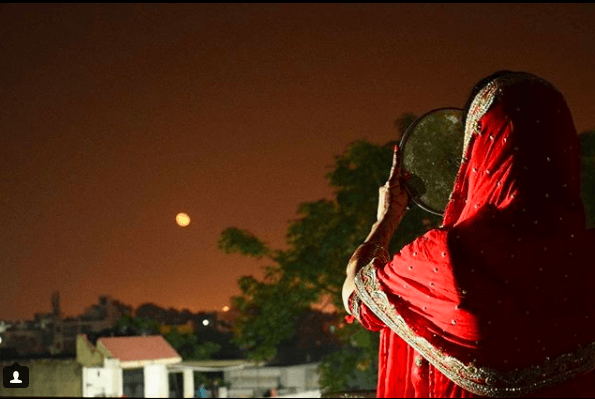
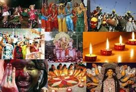
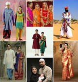
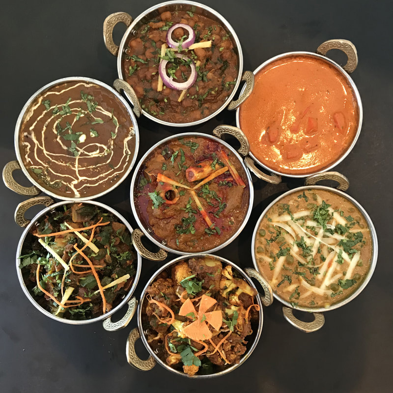
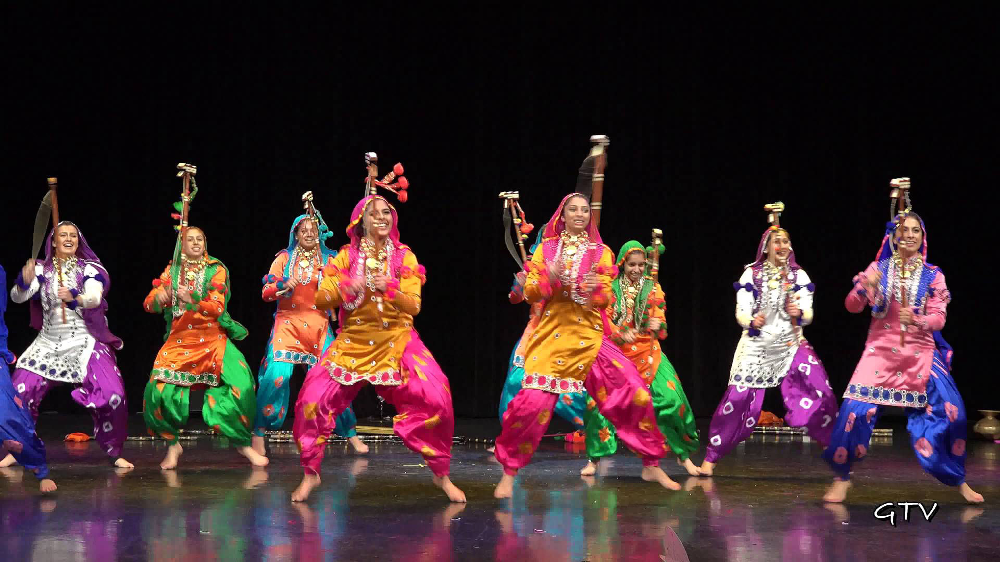

Indian Culture - Unique Customs and Traditions
Indian Culture and conventions are something which has now turned out to be eminent all over the world. Individuals of various religions live respectively and praise their celebrations getting a charge out of with one another spreading joy and cheerful condition. Because of individuals who has a place with various religions, traditions and customs of the social India turned out to be increasingly renowned around the globe, as they offer individuals assortment of activities, sustenance to eat, garments to wear and so forth. We as a whole allude to India and its way of life as something extremely various and exceptional. Be that as it may, only from time to time do we give an idea to why things are done in certain particular ways. Indian Culture is brimming with a few one of a kind traditions and customs, which untouchables may discover extremely interesting. The vast majority of these start from the Ancient Indian sacred writings and writings, which have managed the lifestyle in India for a great many years.
Following are some interesting Indian customs and Traditions
The Namaste
The namaste is one of the most well known Indian traditions and isn't generally simply limited to the Indian domain any longer. You have Barack Obama, who has been seen doing it on different events, or you had Ban Ki-moon, the UN Secretary-General, welcoming everybody with a namaste at the Times Square in New York on the principal International Yoga Day. Additionally, it is spoken in close-by nations like Nepal, Bangladesh and some other south and southeastern pieces of Asia also But, what's the importance? The Namaste, or namaskar, or 'namaskaara' is one of the five types of customary welcome referenced in the old Hindu sacred texts, the Vedas. It actually makes an interpretation of to 'I bow to you', and welcome each other with it is a method for saying 'May our psyches meet', demonstrated by the collapsed palms set before the chest. The word namaha can likewise be interpreted as 'na mama' (not mine), to imply the decreases of one's self image within the sight of the other. This deferential motion of welcome individuals in the Hindu custom has diverse otherworldly implications and essentialness and is said to express respect, cordiality, obligingness, neighborliness and appreciation to the next individual. Aside from being utilized as a welcome, it is additionally utilized during formal love in a sanctuary or some different religious spot. With regards to venerating a divinity, at that point Namaste connotes 'welcoming the God'.
Namaste! This is one word that you would often hear in India, and must therefore understand and learn by heart if you’re planning a visit to the country. Not just Hindus, but Sikhs also greet people by folding their hands, however, their greeting is called ‘Sat Sri Akal’.
What is Sat ?
"Sat" is derived from word "satya" is a Sanskrit word that generally translates into English as "truth" or "correct."
What is Sri or Shri?
Shri is a word which denotes respect just like the Punjabi words Ji or Sahib; also implies that the person is great.
What is Akal ?
Akal is a word which refers to the undying and here "akaal" denotes "God". The word "Kal" is used to represent "Death" and A-Kal is the opposite of that - "that which defies death"
Also, Sikh's believe that God resides in all - so one it is just a way of saying “I respect the god within you.” When two Sikhs meets they says Sat Sri Akal with folded hand near the chest with head slightly bowed in a "humbling and respectful posture" bending forward and downwards keeping the legs straight - It is submission and respect for the Almighty Lord.
Joint Families
Joint family implies a consanguineal nuclear family that incorporates at least two ages of related through either the fatherly or maternal line who keep up a typical home and are liable to normal social, financial, and religious guidelines. In India, People live in joint families in view of the durable idea of the general public, and furthermore supposedly helps in taking care of weight and stress.
Joint families have existed over decades and hundreds of years in India and have endure the progressions of time.Joint families, for quite a while, were viewed as the most steady sort of families, and have suffered assaults of progress. They guarantee that monetary and social duties are not borne by people, yet shared by all the grown-up members of a joint family. Along these lines, the weight of running a family does not fall upon any one individual or individual family.There is compelling division of work, where work being partitioned among all individuals from the family based on age, sex and to a limited degree, aptitude. Individuals collaborate with each other since they hold property in common. All the relatives are all around cared for, and even the jobless, matured and incapacitated are given consideration and legitimate consideration. Entertainment, relaxation and instruction are dealt with by the joint family. It additionally energizes the propensity for sharing and love among kids.
The characteristics of joint family are as follows:
- A joint family consists of a minimum of three generations—grandparents, parents and children.
- All members of a joint family live under one roof, and form one single household.
- There is a common hearth or kitchen.
- In general, members of a joint family partake in common worship.
- A joint family shares the purse, or all the incomes are pooled and expenditures are shared.
- Members of a joint family hold a common property. The head of the family manages the property on behalf of its members.
- The eldest member in the family acts as the head of the family and exercises considerable authority over members.
- By nature, a joint family is larger in size, since it consists of three nuclear families and generations living together.
In this modern era, very less people prefers to live in the joint familiy. This is predominantly because of the effect of urbanization, which has brought about enormous scale relocation from country regions (where one can locate the most traditional joint families) to urban territories. This has brought about the deterioration of joint families in India. Training and westernization have likewise added to this disintegration. The disappointment of farming, joblessness and relocation has come about in the emergence of family units everywhere throughout the nation.
Arranged Mariage System
The idea of organized marriage in India follows its birthplace to as ahead of schedule as the Vedic occasions. For regal families, a function known as the 'Swayambar' would be orchestrated the lady. Appropriate matches from everywhere throughout the kingdom were welcome to either contend in some challenge to prevail upon the lady of the hour, or the lady of the hour would herself pick her optimal spouse. Indeed, even today, the idea of orchestrated marriage remains a most loved among Indians and is a vital piece of 'Indian Traditions'. If there should be an occurrence of a masterminded marriage, guardians and different relatives settle on a real existence accomplice that they esteem appropriate for their youngster. They remember different variables, distinctive for young men and young ladies, while looking for an appropriate match to connect their names with. It's a convention Indians discover hard to part with.
Indeed, even in the 21st Century, around 85 percent Indians like to wed the kid or young lady picked by their families, as opposed to picking their life accomplices themselves. This measurements was delighted in a review led by the Taj Group of Hotels. Another overview by IPSOS in 2013, uncovered that 74% of youthful Indians, matured between 18-35 years said that they would prefer to give their folks a chance to pick their life accomplices, than picking themselves. The achievement rates of these masterminded relational unions when contrasted with the figures concerning love relational unions, we may very well understand that adhering to conventions and tuning in to your folks isn't generally an uncool activity.
Fasting
Fasting is an important part of Hindu culture. Fasts or Vrats or Upvas are an approach to speak to your earnestness and resolve, or offer your thanks to the Gods and Goddesses. Individuals all through the nation watch fasts during different religious events. A few people additionally watch quick on various days of seven days for a specific God or Goddess related with that specific day. It is broadly accepted that thusly, you are denying your body of a fundamental need and subsequently, rebuffing yourself to purify off the transgressions that you have submitted until the day of quick. The standards and guidelines of a quick are as per the specific event. The cause of quick likely originates from the Vedic ceremony of fuel the conciliatory flame for penance purposes. Since the word 'upvas' has been utilized for signifying the two fasts and fuel conciliatory flame, it very well may be believed that individuals watched fasts when they needed to encourage or revive the local flames kept in their homes to perform day by day forfeits.
One of the fasting ocassion is the "Karwa chauth", the most popular day of "fasts". Karwa Chauth was initially seen to commend the kinship, sisterhood, and, harmony between ladies. In old occasions, young ladies would get hitched at an in all respects early age to men their identity inexperienced with, and needed to proceed to live with their in-laws in different towns. They would feel in solitude in a new setting. In this way, the custom of 'companions forever' began as this celebration. At the point when the lady of the hour would contact her in-laws, she would get to know another lady here who might be her companion or sister forever and with whom she could don't hesitate to share her mysteries. With evolving times, this custom turned into a quick seen by a wedded lady for the life span of her better half. Be that as it may, these days, numerous spouses additionally keep the quick with (or for) their wives. Numerous young ladies, in recently established connections, likewise keep the quick for the prosperity of their life partners.
Always a Festive Season
India is outstanding everywhere throughout the world as a nation of social and customary celebrations as it has numerous societies and religions. One can appreciate the celebration festivity in India consistently. As it is a common nation brimming with decent variety in the religions, dialects, societies and stations, it is constantly packed with the general population associated with the fairs and celebrations festivity. Individuals from every religion have their own social and conventional celebrations.
A portion of the celebrations are praised by the general population of all religions in the whole country. Every single celebration is commended interestingly in various ways as indicated by the ceremonies, convictions and its critical history behind. Every celebration has its very own history, legend and importance of festivity. Indian cause individuals in the abroad likewise praise their social celebration with the huge enthusiasm.
India sees a large number of celebrations, simply because of the commonness of various religions and gatherings. The Muslims observe Ramadan / Eid-ul-fitr, the Christians have Christmas, great Friday, etc, the Sikhs have Baisakhi (collecting of yield),Diwali,Raksha Bandhan and the birthday celebrations of their Gurus and the Hindus have Diwali, Holi, Makar Sakranti,Krishna Janmashtami, Raksha Bandhan, Navaratri/Durga Puja, Dussehra, Maha Shivaratri the Jains have Mahavir Jayanti, the Buddhists praise the Buddha's birthday on Buddha Poornima, and truly, the number is perpetual.
Indian Traditional Wear
Customary dresses of India shift starting with one piece of the nation then onto the next dependent on geology, atmosphere, ethnicity, and culture. In the period of westernization and globalization, India has figured out how to save its way of life through the articles of clothing worn. Customary Indian garments are particularly a staple in festivities, for example, weddings and celebrations.
Garments worn in India have advanced after some time. Impacts from the Gupta time frame, foundation of Islam, and British colonization have been obvious in Indian outfits since forever. Style in India turned into an across the board marvel after freedom, particularly in the late the 1980s through to the 1990s. During this period, India was presented to worldwide design, and a monetary blast filled the development of the business. Developing Indian creators combined both old and western components and idealized the specialty of weaving to make proclamation articles of clothing. The flourishing Bollywood industry likewise contributed a lot to the blast of India's design industry.
Indian Traditional wears of men and women -
- Dresses of men:
- Sherwani
- dhoti-kurta
- bandhgala
- kurta-pajama
- lungi
- Dresses of women:
- Saree
- Lehenga Choli
- Salwar Kameez
Indian Food
Indian nourishment and food not just frame an indispensable piece of Indian culture but at the same time are one of the key components of India's popularity around the world. The style of cooking differs from place to place and religion to religion depending on their taste and elders, however collectively, Indian nourishment has a noteworthy popularity for its broad utilization of flavors and herbs. Much the same as moves, religious practices, language and garments, you will likewise locate a wide assortment of sustenance all through the nation. Pretty much every area is known as one special different dish. The staple, be that as it may, all through the nation comprises generally of rice, wheat and Bengal gram (Chana). While veggie lover nourishment is a vital piece of Gujrati, South Indian and Rajasthani cooking styles, non-vegan dishes structure a focal piece of Mughlai, Bengali, North Indian and Punjabi food. It is likewise fascinating to take note of that specific foods like that of Kashmir have additionally been impacted by outside cooking styles from Central Asia, Persia and Afghanistan.
Instead of these, there are variety of Indian food which is very delicious and people used to eat in daily routine. In today's time, fast food is most preferable food of Indians in which a variety of burgers, pizza's, noodles, manchurian etc. comes. No doudt, they are unhealthy but people used to take these meals to save their cooking time and for the taste of thier tongue.
Indian dance
Due to people of different religions living in India together, there are variety of dances related to a particular province of India or religion of people. Whenever we talk about cultural dance, "The Bhangra" of Punjabi boys and "The gidha" of the Punjabi girls are the most famous from past till now.
People moves for the most part follow their significance to the provincial territories, where exhibitions portray the everyday existence of country occupants. The procedure for a reasonable match is one long and tiring exertion, which starts with coordinating a few criteria like the horoscope, religion, rank, proficient stature, physical appearance and culture. It is ensured that greater part of the criteria are a 'coordinate made in paradise' (regardless of whether it must be customized). After all the checkboxes are ticked, the seniors of the family meet for an up close and personal communication. When the discussions are fruitful, arrangements for the wedding start going all out. Moreover, Classical dances in India are strictly classified as and performed according to the rules and guidelines prescribed in the Natyashastra. Just like Classical dances, folk dances in India too originate from different regions of the country.